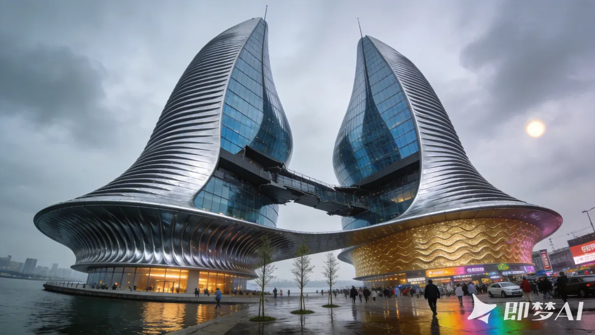
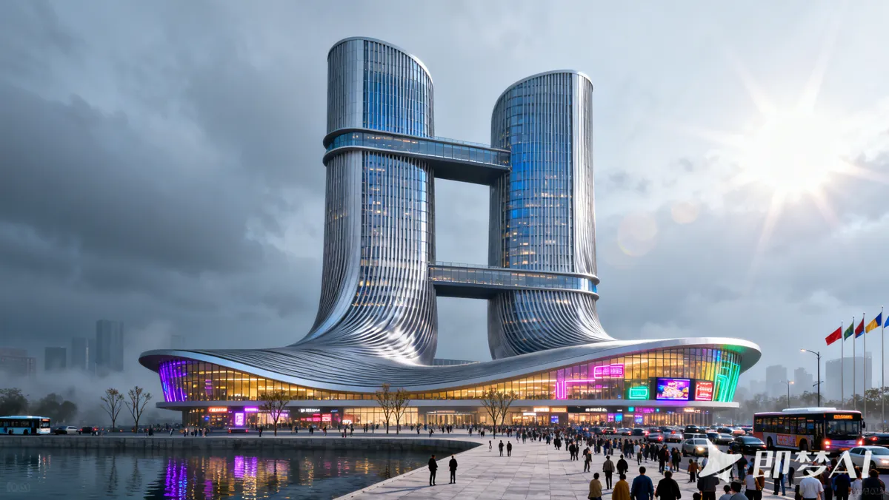
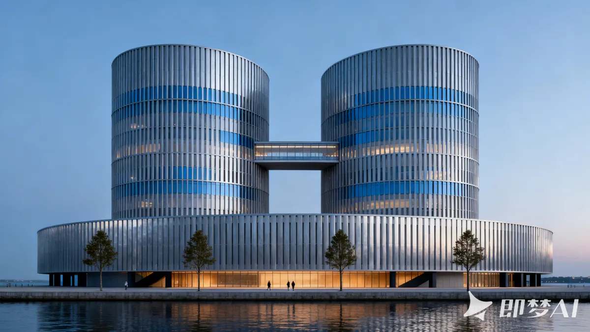
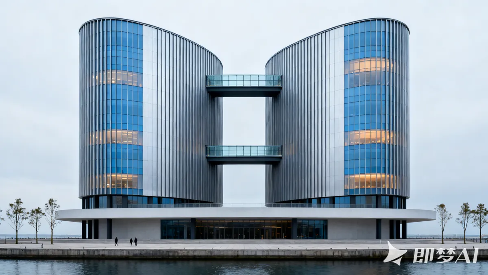

Commercial / fantasy driftSame reference, same evaluation rubric, four candidates. The change is visible in structure, setting, skybridges, palette, and commercial drift.

Commercial / fantasy drift
Stronger parametric form; lighting drift remains
Better structure; unstable setting
More stable palette, setting, and two-skybridge structureevals/.